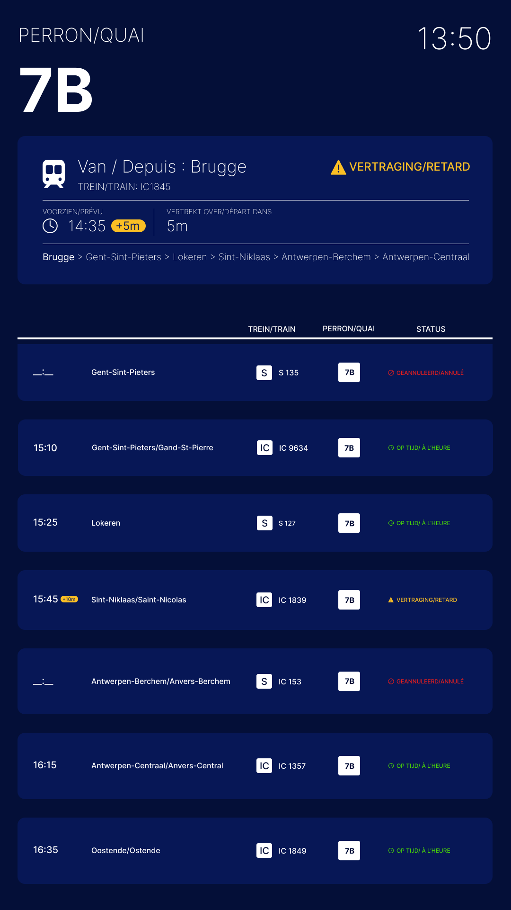
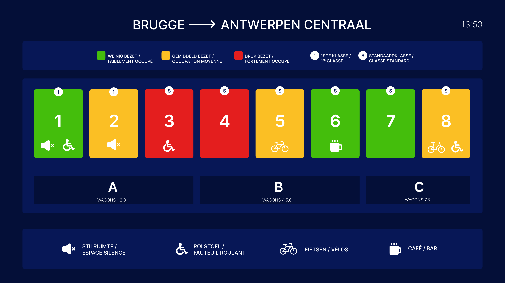
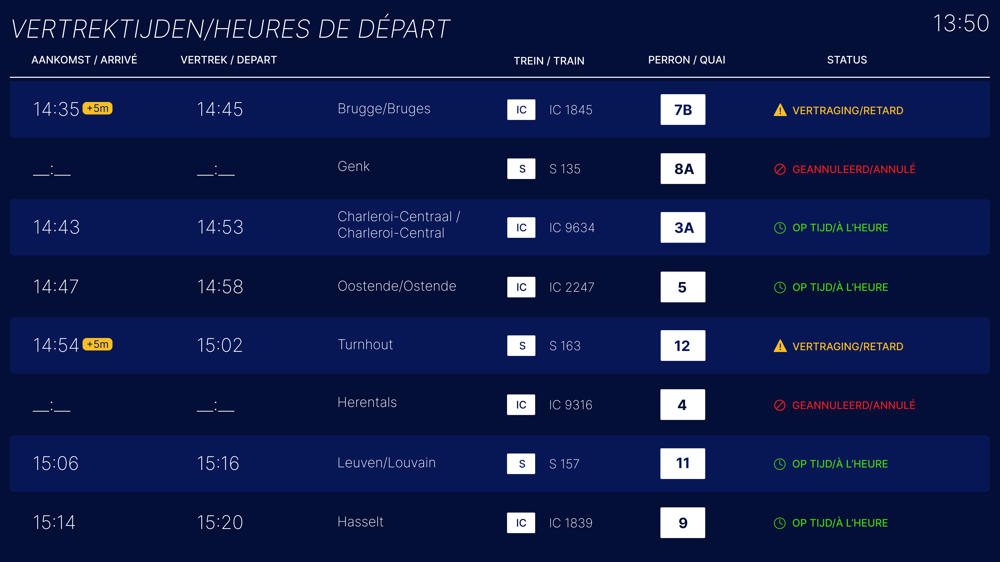

Week 5
In week 5 ben ik begonnen met HTML en CSS te gebruiken op basis van mijn high fidelity. Ik kon eindelijk de kleuren, vlakken en fonts echt coderen, en het was super leuk om te zien hoe alles tot leven kwam. Mijn ontwerp begon echt te lijken op een treinstationsbord met haltes, wat precies het gevoel was dat ik wilde bereiken.
Tijdens het maken van mijn bord kwam ik wel wat errors tegen. Soms werkte iets niet zoals ik het wou, en moest ik andere oplossingen zoeken. Dat was af en toe wat irritant, maar uiteindelijk lukte het me toch om alles goed te krijgen. Ik kijk er al naar uit om dit project in de toekomst nog verder te verbeteren en uit te breiden.


